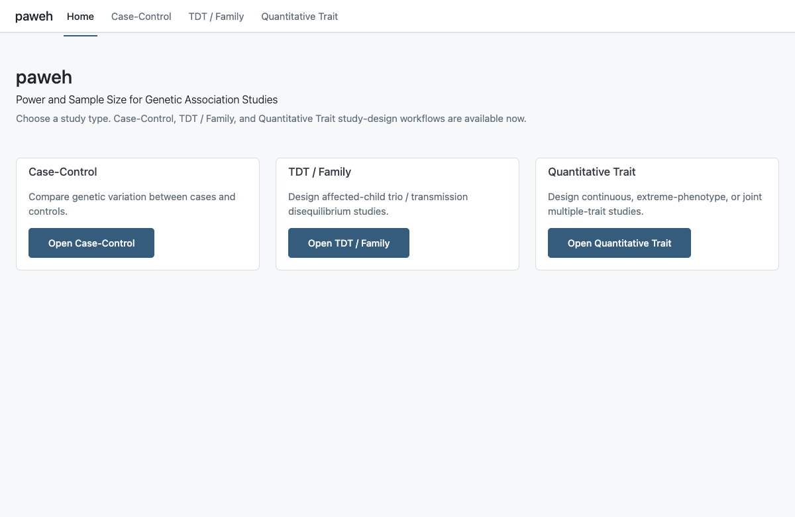
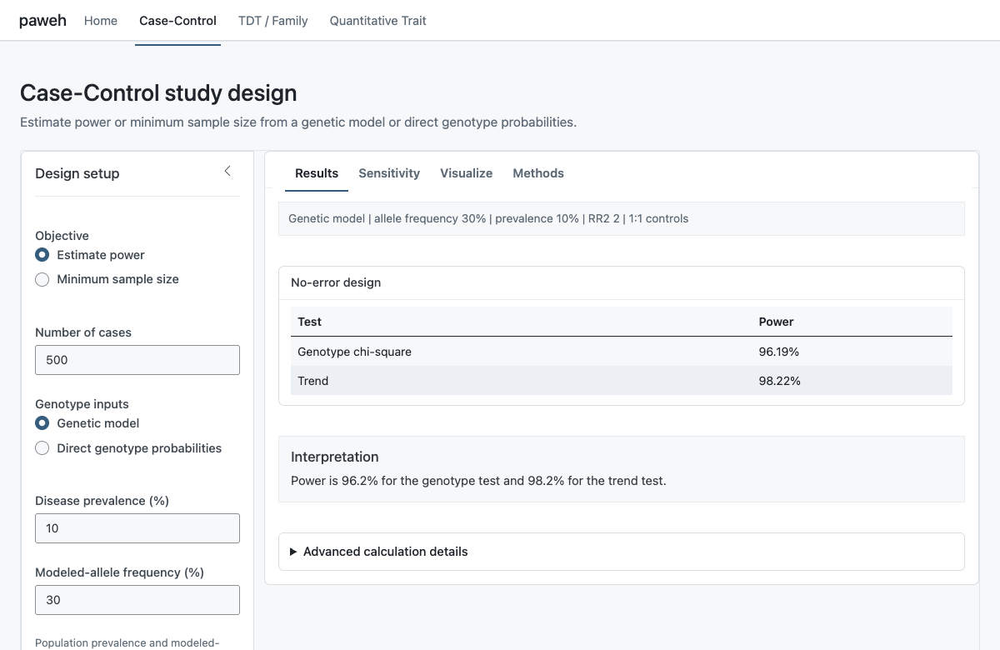
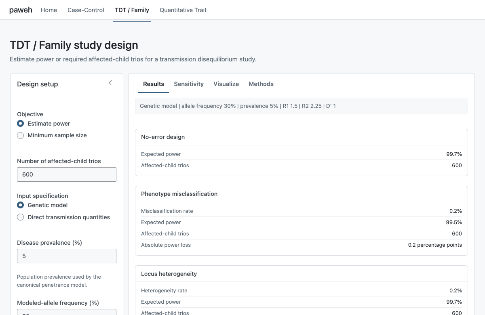
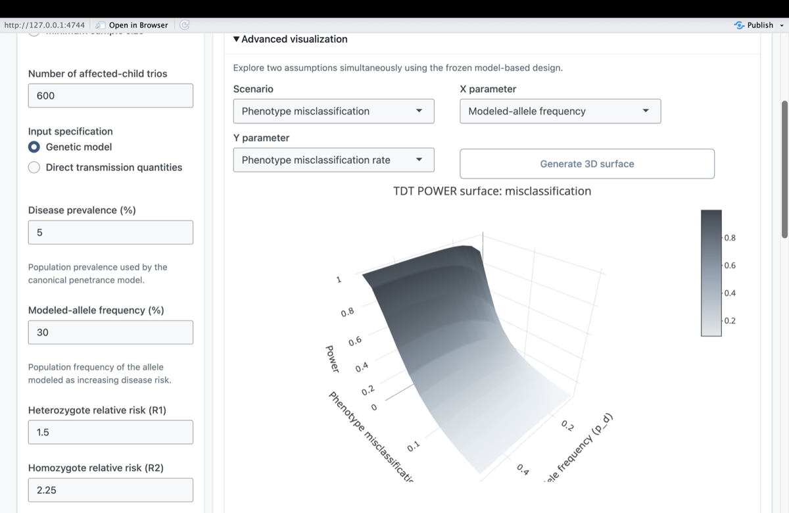
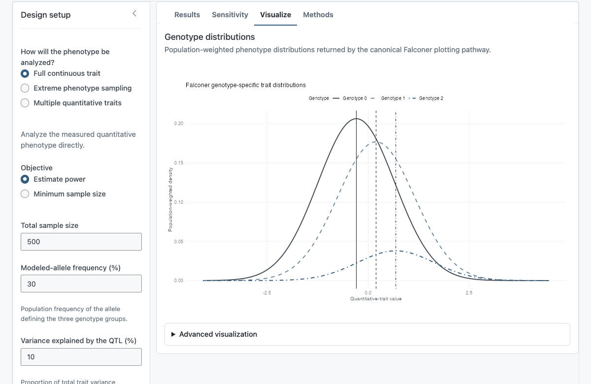
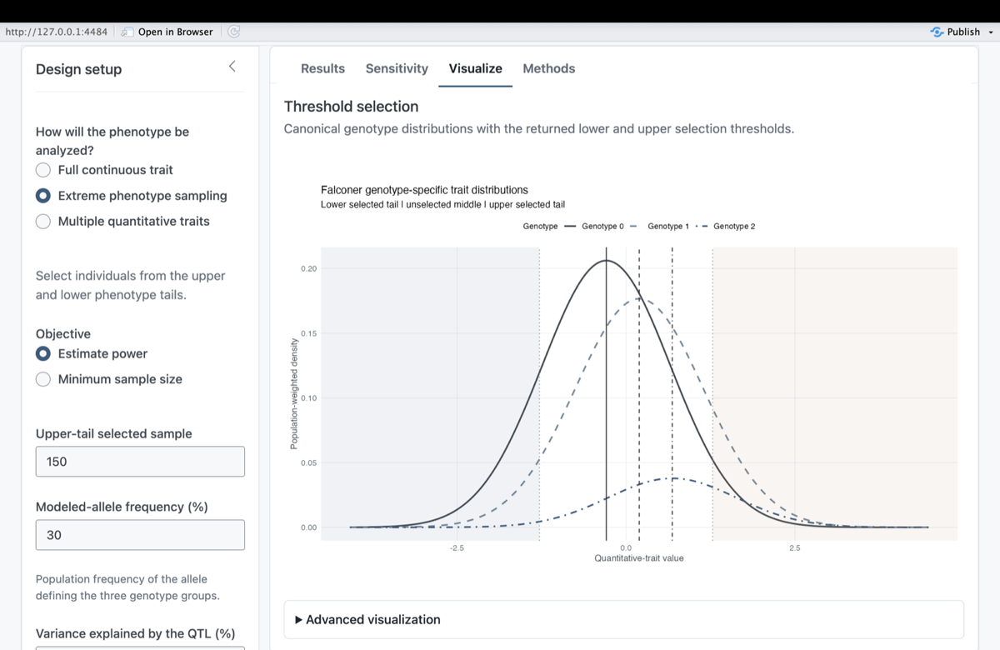
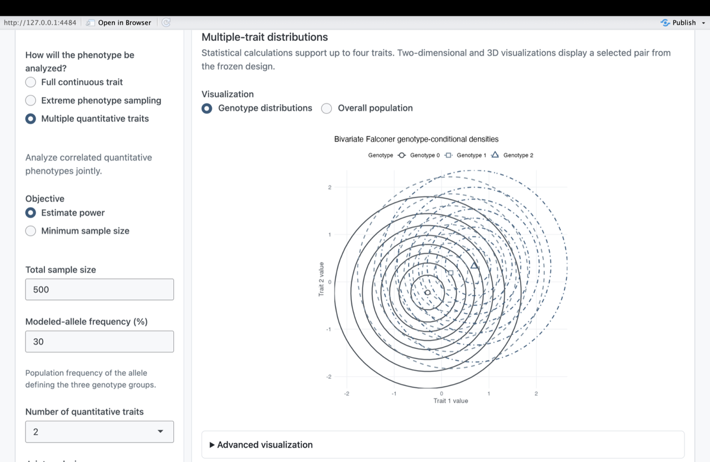
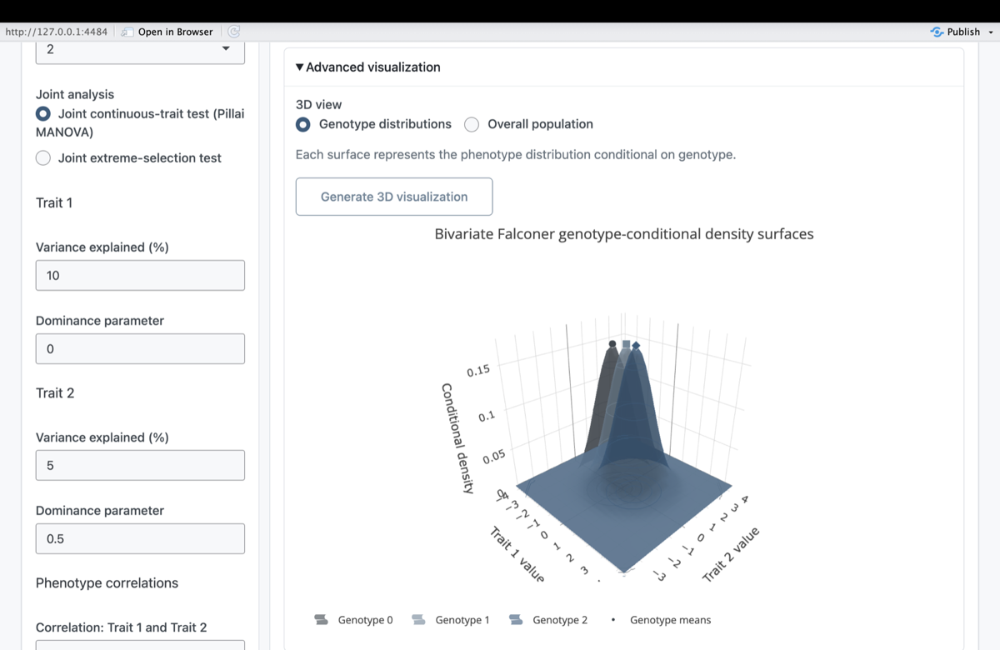

Interactive Study Design with the paweh Dashboard
paweh package authors
Source:vignettes/paweh-05-interactive-dashboard.Rmd
paweh-05-interactive-dashboard.RmdIntroduction
paweh includes an interactive Shiny interface for
Case-Control, TDT / Family, and Quantitative Trait study-design
calculations. The dashboard uses the same canonical statistical
functions as the programmatic R interface; it is an interface to those
functions, not a separate statistical engine.
This guide focuses on navigating the interface and carrying a design through its workflow. For statistical definitions, assumptions, and derivations, use the study-specific vignettes linked throughout this guide.
Launching the dashboard
Construct the application and then launch the returned object explicitly:
paweh_app() returns a shiny.appobj; it does
not launch the application automatically. Keeping construction and
launch separate is useful in scripts, tests, and deployment tooling. The
vignette does not execute runApp().

The paweh dashboard organizes study design by study family, with a dedicated workspace for each supported design.
A typical workflow is:
- Choose a study family.
- Select Estimate power or Minimum sample size.
- Enter the model assumptions.
- Select Calculate study design.
- Review Results.
- Explore Sensitivity.
- Inspect Visualize.
- Review Methods, advanced details, and the reproducible R call.
Frozen calculated design. Selecting Calculate study design freezes the current inputs. If an input is edited afterward, the dashboard reports “Inputs have changed. Recalculate to update results.” Results, Sensitivity, Visualize, Methods, Advanced calculation details, and Reproduce in R continue to describe the last calculated design. Select Calculate study design again to update them. This prevents an edited input from silently changing only part of the displayed analysis.
Across workspaces, Results summarizes the requested design quantity, Sensitivity varies one assumption while holding the frozen design fixed, Visualize displays study-specific plots, and Methods summarizes the procedure and assumptions. Advanced calculation details provide additional returned quantities for technical review.
Case-Control workflow
The Case-Control workspace compares genotype distributions between cases and controls. Choose whether to estimate power at a specified number of cases or find the minimum sample size for a target power. Inputs may be specified as a genetic model or as direct case and control genotype probabilities.
For a model-based design, core assumptions include disease prevalence, modeled-allele frequency, the homozygote relative risk and mode of inheritance, the case-to-control allocation, and the significance level. Advanced options cover phenotype misclassification, genotype misclassification, and locus heterogeneity. Their statistical definitions are described in the Case-Control Study Design vignette.
A representative programmatic calculation corresponding to the dashboard is:
cc_design <- cc_power(
N_case = 500,
alpha = 0.05,
input_mode = "model_based",
prev = 0.10,
pd = 0.30,
R2 = 2,
MOI = "M",
k = 1,
verbose = FALSE
)
data.frame(
test = c("Genotype chi-square", "Trend"),
power = c(cc_design$tests$genotypes$power, cc_design$tests$trend$power)
)
#> test power
#> 1 Genotype chi-square 0.9619099
#> 2 Trend 0.9821860
The Case-Control Results tab summarizes genotype chi-square and trend-test power for the frozen study design, with advanced calculation details available for review.
For power, Results reports the expected power of the genotype chi-square and trend tests. For minimum sample size, it reports the required design size. When an effective modifier is active, the dashboard distinguishes the no-error baseline from adjusted results. These are deterministic calculations under the entered assumptions, not estimates from observed data.
In Sensitivity, select one parameter and a range. Every other assumption stays at its frozen value, and a vertical marker identifies the calculated design. The plot may use a tightly zoomed y-axis to make small changes in power visible; the interface notes when it does so. Visualize presents the current case-control genotype comparison using the frozen design.
TDT / Family workflow
The TDT / Family workspace designs transmission disequilibrium studies in affected-child trios; the trio, rather than an individual participant, is the sampling unit. Choose power or minimum sample size, then specify either a genetic model or direct expected transmission quantities. Model-based inputs include the heterozygote relative risk (R1), homozygote relative risk (R2), and linkage disequilibrium measure D-prime, along with prevalence and allele frequency. See TDT Study Design for the underlying statistical model.
Separate TDT modifier scenarios. Phenotype misclassification and locus heterogeneity are evaluated as separate TDT sensitivity scenarios. When both are enabled, the dashboard displays (1) the baseline/no-error design, (2) the phenotype-misclassification scenario, and (3) the locus-heterogeneity scenario. It does not interpret them as one joint combined TDT model.

The TDT Results tab keeps the baseline, phenotype-misclassification, and locus-heterogeneity scenarios separate when both modifiers are requested.
The transmission visualization compares expected transmitted and non-transmitted quantities and labels them numerically from the canonical TDT result. Sensitivity varies one parameter at a time while preserving the other frozen assumptions.
An optional 3D surface explores two assumptions simultaneously. It is generated only after the user requests it, uses the frozen model-based design, and does not alter the primary calculation. Rotate the Plotly surface with click and drag, and zoom or inspect values interactively.

The optional TDT 3D surface explores two assumptions simultaneously while retaining the last calculated model-based design.
Quantitative Trait workflow
The Quantitative Trait workspace supports three related designs: analysis of a full continuous trait, sampling from extreme phenotype tails, and joint analysis of multiple correlated quantitative traits. Across these modes, core inputs include modeled-allele frequency, variance explained by the QTL, dominance, significance level, and either sample size or target power. The Quantitative-Trait Study Design vignette explains the statistical theory.
Full continuous trait
This design analyzes the measured quantitative phenotype directly. Results report expected power or minimum total sample size. Visualize shows the genotype-conditional phenotype distributions, making their relative locations and overlap visible without deriving the Falconer equations.

The continuous-trait visualization shows the population-weighted genotype-specific phenotype densities returned by the canonical Falconer pathway.
Extreme phenotype sampling
This design analyzes individuals selected from the lower and upper phenotype tails. Enter the population-tail proportions and selected sample size; the dashboard reports the corresponding phenotype thresholds and selected-group ratio. The distinction is important: the user specifies population-tail proportions, and the model determines the corresponding phenotype thresholds. The plot separates the lower selected tail, unselected middle, and upper selected tail.

The extreme-phenotype visualization distinguishes the two selected tails from the unselected middle and marks the model-determined phenotype thresholds.
Multiple quantitative traits
The statistical calculations support two to four traits, with trait-specific variance explained, trait-specific dominance, and phenotype correlations. The workspace offers a joint continuous-trait test (Pillai’s trace MANOVA) and a joint extreme-selection test (multivariate threshold genotype chi-square).
In Genotype distributions, each contour or surface represents the joint phenotype distribution conditional on genotype. Overall population instead shows one genotype-frequency-weighted mixture density. Three genotype groups do not necessarily produce three distinct peaks in that overall mixture. Selection regions are shown only when they apply to the chosen analysis.

The two-dimensional genotype-distribution view compares genotype-conditional contours for the selected trait pair.
For three- or four-trait designs, the statistical calculation uses every trait in the design. The two-dimensional and 3D visualizations display a selected pair at a time; use the trait-pair selector to choose which two traits appear.
The optional 3D Plotly view is generated only on request. Its horizontal axes are the selected phenotype traits, and surface height is density. In the genotype-distribution view, separate surfaces are conditional on genotype; in the overall-population view, one surface represents the weighted mixture. Rotate with click and drag, and zoom or inspect the surface interactively.

The on-demand 3D genotype-distribution view presents separate genotype-conditional density surfaces for the selected phenotype pair.
Advanced calculation details and Methods
Advanced calculation details exposes deeper quantities returned by the same canonical calculation used for the primary result. Depending on the workflow, these can include genotype frequencies, genotype-specific probabilities, expected transmission quantities, noncentrality parameters, degrees of freedom, genotype means, residual variance, covariance matrices, selection probabilities, and fractional minimum sample size. Not every field appears for every model. These details are intended mainly for expert review, validation, and transparency.
Methods summarizes the statistical procedure and assumptions for the frozen design. It complements Advanced calculation details: Methods explains what procedure is being used, while Advanced calculation details shows quantities produced by that calculation.
Reproduce in R
Every calculated design includes a Reproduce in R block generated from the frozen inputs. It uses the same canonical public function and arguments as the dashboard calculation. For example, a model-based TDT design may produce:
tdt_power(
N = 600,
alpha = 0.05,
input_mode = "model_based",
prev = 0.05,
pd = 0.30,
R1 = 1.5,
R2 = 2.25,
delta_prime = 1,
verbose = FALSE
)Copy this code into a script to preserve the design in a reproducible analysis or to extend it programmatically.
Frequently asked questions
Why did my result not change when I edited an input?
The dashboard preserves the last calculated design until Calculate study design is selected again.
Why is the sensitivity plot y-axis zoomed?
A tighter scale makes small changes in power easier to see. The dashboard displays a note when the scale is tightly zoomed.
Why can minimum sample size be Inf?
For a model with no detectable contrast or effect, no finite sample size can reach the requested power.
Why are TDT misclassification and heterogeneity shown separately?
They are separate sensitivity scenarios in the current TDT implementation and are not combined into a joint adjusted model.
Why can I calculate three or four traits but see only two in the plot?
The statistical model uses all selected traits, while the 2D and 3D visualizations display two selected traits at a time.
Why does a 3D plot not appear immediately?
3D widgets are generated on demand to keep dashboard startup responsive.
What is the difference between Advanced calculation details and Methods?
Advanced details shows model and calculation quantities; Methods summarizes the statistical procedure and assumptions.
Dashboard and programmatic workflows
Use the dashboard for interactive exploration, study planning, sensitivity inspection, and visualization. Use the canonical R functions for scripted workflows, reproducible pipelines, simulations, batch analyses, and analysis code accompanying manuscripts or supplements. Both interfaces use the same statistical backend.